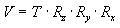
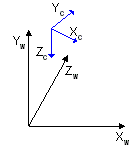
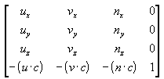

The view transformation locates the viewer in world space, transforming vertices into camera space. In camera space, the camera, or viewer, is at the origin, looking in the positive z-direction. Recall that Microsoft® Direct3D® uses a left-handed coordinate system, so z is positive into a scene. The view matrix relocates the objects in the world around a camera's position—the origin of camera space—and orientation.
There are many ways to create a view matrix. In all cases, the camera has some logical position and orientation in world space that is used as a starting point to create a view matrix that will be applied to the models in a scene. The view matrix translates and rotates objects to place them in camera space, where the camera is at the origin. One way to create a view matrix is to combine a translation matrix with rotation matrices for each axis. In this approach, the following general matrix formula applies.

In this formula, V is the view matrix being created, T is a translation matrix that repositions objects in the world, and Rx through Rz are rotation matrices that rotate objects along the x-, y-, and z-axis. The translation and rotation matrices are based on the camera's logical position and orientation in world space. So, if the camera's logical position in the world is <10,20,100>, the aim of the translation matrix is to move objects –10 units along the x-axis, –20 units along the y-axis, and –100 units along the z-axis. The rotation matrices in the formula are based on the camera's orientation, in terms of how much the axes of camera space are rotated out of alignment with world space. For example, if the camera mentioned earlier is pointing straight down, its z-axis is 90 degrees (π/2 radians) out of alignment with the z-axis of world space, as shown in the following illustration.

The rotation matrices apply rotations of equal, but opposite, magnitude to the models in the scene. The view matrix for this camera includes a rotation of –90 degrees around the x-axis. The rotation matrix is combined with the translation matrix to create a view matrix that adjusts the position and orientation of the objects in the scene so that their top is facing the camera, giving the appearance that the camera is above the model.
Another approach involves creating the composite view matrix directly. The D3DXMatrixLookAtLH and D3DXMatrixLookAtRH helper functions use this technique. This approach uses the camera's world space position and a look-at point in the scene to derive vectors that describe the orientation of the camera space coordinate axes. The camera position is subtracted from the look-at point to produce a vector for the camera's direction vector (vector n). Then the cross product of the vector n and the y-axis of world space is taken and normalized to produce a right vector (vector u). Next, the cross product of the vectors u and n is taken to determine an up vector (vector v). The right (u), up (v), and view-direction (n) vectors describe the orientation of the coordinate axes for camera space in terms of world space. The x, y, and z translation factors are computed by taking the negative of the dot product between the camera position and the u, v, and n vectors.
These values are put into the following matrix to produce the view matrix.

In this matrix, u, v, and n are the up, right, and view-direction vectors, and c is the camera's world space position. This matrix contains all the elements needed to translate and rotate vertices from world space to camera space. After creating this matrix, you can also apply a matrix for rotation around the z-axis to allow the camera to roll.
For information on implementing this technique, see Setting Up a View Matrix.